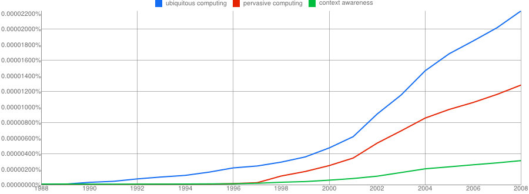

About research in general
To everyone working on research, especially those recently started, I recommend having a look at Robert W. Lucky's article In Research, the Problem is the Problem.A problem well stated is a problem half solved
-- Inventor Charles Franklin Kettering (1876-1958)
Supervision
How should students be supervised in grad-schools? While not trivial, Matt Welsh suggested the way that I personally think would be most effective:
''If I were *forced* to go back to academia, I would run my group much more like a software team. We would have a clear set of objectives and milestones; we'd do code reviews; we'd all sit in the same lab together (I'd eschew a separate office except for one on one meetings); we'd do regular performance reviews for everyone (at least quarterly). The expectations would be made very clear about what it would take to be successful. I would no longer allow students to meander in twice a week and get nothing done for months on end until the next paper deadline rolls around. And we'd focus on "shipping", both code and papers. I would quickly kill projects that were not gaining traction. I was pretty bad about that and let some projects drag on for years without any tangible results (mostly because I had a grant and there was no downside, apart from the mental load.)''
Personal research
The main open question I am working on could be defined as:
How can we better develop software that helps mobile users be more productive and less distracted by leveraging context-aware and self-adaptive (autonomic) behavior?
In more detail, my research interests lie in the area of Software Engineering for mobile and ubiquitous computing environments. Specifically, I investigate models, methods and tools for developing context-aware, self-adaptive systems targeting mobile and embedded devices. My goal is to provide solutions to developers of such systems that will enable them to design, implement and maintain such software with the minimum effort possible, while at the same time maximizing the potential of reusing their software components.
 The n-gram of my main research thrusts: ubiquitous computing, pervasive computing, context awareness (image by Google Books).
As part of my research, I was leading the effort for the development of the context-awareness aspects of the IST-MADAM system first (WP1 manager) and its follow-up IST-MUSIC middleware next (WP2 manager). This middleware aimed at allowing the development of context-aware, self-adaptive applications for mobile and ubiquitous computing environments. Subsequently, I participated to the ICT-AsTeRICS (WP2 manager) where I helped design the core architecture of the OSGi-based middleware, realizing its runtime.